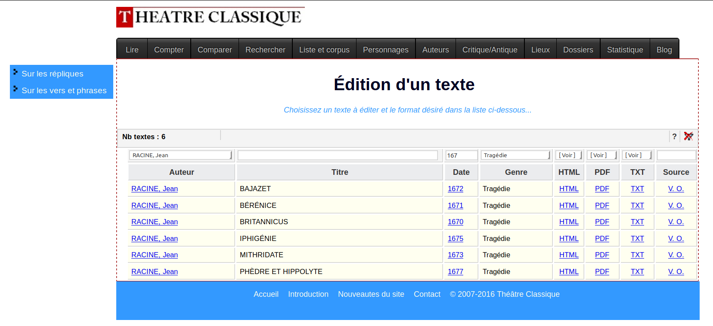
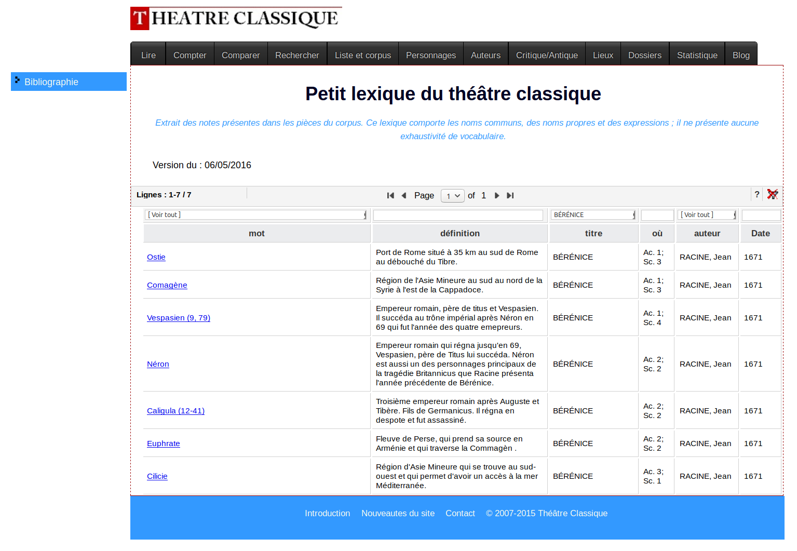
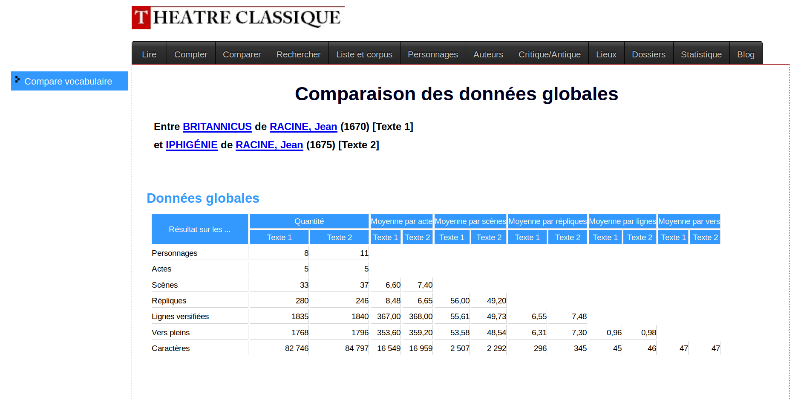

Théâtre Classique
Table of Contents
Abstract
This review concerns a collection of French dramatic texts called Théâtre classique, edited by Paul Fièvre since 2007 and available at http://www.theatre-classique.fr. Over the years, the collection has grown continually and currently provides access to 1,080 French plays, the large majority of which have been written or published between 1630 and 1800. In addition to the plays’ full-text in several file formats, the site provides contextual information on the plays and their authors as well as a number of statistical and analytical perspectives on the textual data. Clearly, the site would benefit from a stronger focus on current standard data formats and from increased transparency regarding editorial principles. It is debatable whether it is a strength or a weakness for a digital resource to interweave data, analysis and contextualization as closely as Théâtre Classique does. However, given the focus, size and quality of the text collection as well as the additional functionality provided by the site, it is clear that there is no comparable or directly competing resource available today for French drama. In fact, Théâtre classique has without a doubt been an essential enabling force for recent, quantitative approaches to French drama.
Introduction
This review concerns a collection of French dramatic texts called Théâtre classique, edited by Paul Fièvre since 2007 and available at http://www.theatre-classique.fr. Over the years, the collection has grown continually and currently provides access to 1,080 French plays, the large majority of which have been written or published between 1630 and 1800. In addition to the plays’ full-text in several file formats, the site provides contextual information as well as a number of statistical and analytical perspectives on the textual data.
The contents of the collection as well as the website itself are continually updated so it is important to note that this review applies to the resource as it was available in December 2017.1
Aims and content
The start page of the Théâtre classique site clearly states the contents of the text collection, namely 1,080 French plays as well as around 100 theoretical texts on the dramatic genre. The start page also briefly explains which functionality the site provides. First and foremost, the full texts themselves can be consulted and downloaded in several formats (HTML, plain text and PDF, but not XML-TEI). Moreover, the site provides additional perspectives on the text collection, notably via a number of statistics (word frequencies by dramatic character, lists of rhyming words by play, word searches across plays, play’s locations, etc.) as well as background information (such as biographical information on the authors represented and a bibliography).
The site does not state any specific aims it pursues, from which this reviewer concludes that it has a primarily documentary and enabling aspiration, rather than pursuing any specific research- or teaching-oriented objectives. The nature of the texts being made available clearly places this text collection in the disciplinary context of Literary Studies, more precisely of the study of French Classical and Enlightenment drama.
The site provides file formats primarily intended for reading of individual plays (HTML and PDF) as well as a very simple plain text format (TXT with very basic document-level metadata), but no version of the plays that would provide rich document-level metadata and detailed structural or other markup. It is true that the site does provide a number of functionalities that enable quantitative, statistical perspectives on the text collection. However, the site does not facilitate the bulk download of the materials it presents.
The collection is focused on a single but broadly defined genre of literary texts, namely dramatic texts in verse and prose, on a large but relatively clearly defined period, namely 1630-1800, and on one language, namely French. There are some exceptions to this focus, however: First, around a dozen texts have been written or published before 1630. Second, there are 106 plays that have been written or published after 1800; they are, however, spread out between 1800 and 1930 in a way that, with the exception of the 1880s, only a small number of plays are present for each decade. In addition, there are 23 plays by Ancient Greek authors such as Sophocles, Euripides or Seneca, published in their nineteenth-century French translations. Despite these exceptions, 939 (or 87 %) out of the 1,080 total plays have been written or published between 1630 and 1800.
Methods
Design, selection and composition
There is no information on the rationale according to which the texts contained in the Theâtre classique collection have been selected, other than the fact that French plays published or written between 1630 and 1800 are the primary focus of the collection. One does notice that most highly canonized authors are represented with their entire (or virtually entire) dramatic oeuvre on Théâtre classique: this is true, for example, for Pierre Corneille, Thomas Corneille, Jean Racine, Molière, Marivaux or Voltaire. Beyond the highly canonized authors, many second- and third-tier authors are also represented, although it is more difficult in these cases to assess the level of completeness of their works. Inevitably, many authors and individual plays are also missing.
Estimating the level of completeness of a collection of literary texts relative to the complete relevant production of texts is notoriously hard. The Théâtre classique site provides some relevant numbers: for example, the editor has compiled a list of known plays for the period 1589 to 1720 which currently runs to 1,919 plays. And they link to the César database, which contains references for virtually all known French plays (of any length and description) for the period 1600-1800 and which lists 18,830 titles.2 With around 945 plays for the period 1600-1800, Théatre classique therefore contains about 5% of the entire production of dramatic works, although this proportion is probably much higher for the full-length plays (say, the five-act tragedies and comedies) in the collection. Whatever this proportion may be, there is no discernible attempt on the part of the editors to create a balanced or representative text collection.
Beyond the sheer number of individual texts, the size of the collection can be assessed in more fine-grained ways. There is a table called “Statistique générale” which contains information about the number of acts, scenes, dramatic characters, speech acts, lines of verse, sentences in prose, words and characters for each of the 1,080 plays. According to this table, the text collection currently contains 3,218 acts, 24,154 scenes, 10,837 dramatic characters, 342,939 speech acts, 847,006 verses, 284,098 sentences in prose, 10,135,868 word tokens and 53,727,172 characters.3 As for the composition of the collection, besides the main text collection of 1,080 plays, the site also presents around 100 theoretical, critical or polemical texts relevant to French theater of the Classical Age and the Enlightenment period. The main internal divisions of the collection of plays regards the categories of author, year of publication and (relatively fine-grained) dramatic subgenre.
The Théâtre classique site is almost silent on the exact institutional and organizational conditions under which the text collection has been and continues to be produced. A brief “Introduction” states that the idea for the site dates back to the early 1990s and specifies that plays already available in digital form by Molière, Corneille and Racine formed the initial core of the collection, first published in 2007. Finally, the “Introduction” vaguely mentions a privileged relation to the “Centre d’étude de la langue et des littératures françaises” (CELLF) at the University Paris-IV Sorbonne, while the front page mentions several relevant projects to which Théâtre classique is related. Finally, it appears that most transcriptions rely on digital facsimiles available from the Bibliothèque nationale de France’s “Gallica” digital library. However, whether Paul Fièvre transcribed and encoded all the (currently 1080) texts or collaborated with others in this task, is not clearly documented.4 It is safe to assume, however, that the large majority of texts have not been freely available in digital, full-text form before Théâtre classique published them.
The relatively large number of texts, the generic and temporal scope of the collection and the additional functionality of the site make Théâtre classique a “corpus of primary sources” in terms of the typology suggested by Henny-Krahmer and Neuber 2017 in their Editorial on “Reviewing Digital Text Collections”. Indeed, the scope of Théâtre classique is defined in terms of time period, genre and language, but is open with respect to authors and their level of canonization or recognition. It is unclear whether any formal quality assurance of the transcriptions, annotations and metadata has been or is being performed. This reviewer, when using the texts, has noticed that the quality of the transcriptions is generally quite high, although it is certainly not flawless and, more importantly, somewhat uneven across the collection.5 Despite this fact, the quality of the texts is certainly sufficient for most if not all reading purposes as well as for most if not all purposes of quantitative analysis. As far as the level of care that went into establishing the texts and, just as importantly, the level of transparency to the users of the process of establishing the texts is concerned (more on this below), this is certainly no scholarly text edition, but could rather be described as a text collection for scholarly use.
Data Modelling
This aspect of the Théâtre classique collection is particularly tricky to assess, as most of the data modeling is actually happening behind the scenes, in the XML-TEI files not officially available to the users.
If one does look at these XML-TEI files, it becomes clear that the texts have been encoded with two primary concerns, both of which are essential for scholars in literary studies: The first concern is to encode the structure of the plays with the level of detail we have come to be accustomed to for plays encoded in TEI, i.e. with cast lists, acts and verses, speeches and speakers all neatly marked-up, including identifiers for speakers as well as paragraphs and sentences or verses. Considerable care has also gone into marking up things like verses split into several lines. The second concern is to provide very detailed metadata about the texts, not just on the level of authors and plays (where time and place of birth and death for each author in the teiHeader are encoded, for example, or the primary domain of thematic inspiration for each play is documented), but also on the level of the dramatis personae, who are characterized (in many though certainly not all cases) with respect to their gender, age, social status and romantic involvement.
Based on these two types of information, structural annotations and metadata, most of the statistical analyses provided by the Théâtre classique site are generated (more on those below) and many kinds of computational analyses, particularly literary network analyses, are facilitated. Unfortunately, only very little of this information is made directly visible to the users in the HTML, PDF and TXT files. The TXT files include some basic metadata, as they have a brief Dublin Core metadata section prepended to them, but very little explicit structural annotation. The HTML files also have this Dublin Core metadata and, in addition, provide some of the structural annotation, albeit simplified and packaged somewhat inelegantly in table and paragraph elements enhanced with various class attributes. A far cry from the beautiful readability and explicitness of the underlying XML-TEI encoding!
Another important aspect of the transcription and encoding is that there is tacit spelling normalisation and/or modernisation applied in the transcriptions, not just in the HTML, TXT and PDF reading versions, but also in the XML-TEI source files. It is tacit both in the sense that neither the teiHeader nor the Théâtre classique website explains the details of this practice or even mentions it at all, and in the sense of being implicitly practiced in the XML-TEI source files, without marking locations of normalisation / modernisation or documenting both the original reading and the normalised / modernised reading. Again, while this is hard to achieve elegantly in HTML, of course XML-TEI has all the affordances to make this easily possible. However, if made transparent, it would be a legitimate choice to proceed to such a normalisation. It is true that this has several benefits, especially when one targets literary scholars interested in semantic, structural or stylistic aspects of the texts or when the primary aim is to provide convenient reading texts. However, one is sure to disappoint historical linguists interested in variation and diachronic development of spelling conventions as well as scholarly editors interested in a maximally trustworthy rendering of a specific document.6
Provision
The “Introduction”, discreetly linked to in the site’s footer, makes it clear that the underlying data format of the text collection is XML-TEI, with the files corresponding to the Guidelines of the Text Encoding Initiative as they have been proposed in in 2002 (P4). It is one of the most unfortunate decisions of the editor not to make these XML-TEI versions officially available to the users.7 As far as this reviewer can tell, and in the absence of any information on this aspect on the Théâtre classique site, there does not appear to be any technical interface, such as an API or an OAI-PMH interface, for the data. It is also unfortunate that there is no bulk-download facility for the texts.
As a consequence of both the choice of formats provided and of a lack of bulk-download facilities, it is unnecessarily difficult for advanced users to acquire larger parts of the text collection in a structured, expressive format and with rich metadata (provided by the XML-TEI files) for analyses that go beyond the functionalities offered by the Théâtre classique site itself or for building custom text collections incorporating materials from Théâtre classique as well as from other sources.
User Interface



The third type of information provided are statistical or quantitative analyses and data derived from the texts themselves.10 This type of information can be accessed in several places. The main menu entry “Compter” leads to a page with basic numerical information about each play (year of publication, number of acts and scenes, number of dramatic characters and speech acts, number of verses, words and characters as well as some ratios, such as mean number of verses per speech act). Some of these and additional data is also available from each play’s HTML view, for example a view of the number of speech acts by act/scene and by dramatic character. The main menu item “Comparer” gives access to a page where users can select two texts from drop-down menus to obtain the same basic statistics for both texts side-by-side (see Fig. 3). The selection of these statistical indicators appears weakly motivated. Some of them are unsurprising, like the number of words or speech acts. Others are more unusual, like the “indice de fractionnement” which basically gives a quantitative indicator of how many verses are split into more than one line. Also, the main menu item “Statistique” provides access to several analytic views. For example, the “tableaux croisées” lets the users define two criteria, for example “genre” and “vers/prose”, and obtain a table of the number of plays belonging to any of the joint categories, such as prose comedies or verse tragedies.11 One of the most interesting functions is the one providing a “tableau lexical” for each text, broken down by act or dramatic character. At the time of writing, unfortunately, this view only produces a list of errors instead of showing the data. It is also possible to search for a term in any one play (this search also lets the users define additional constraints, like the initial or final position in a verse) or in all the plays by any one author, or across all plays. Furthermore, there are similar views on the places of the dramatic action, the locations where plays were represented, the plays corresponding to certain thematic inspirations (like “histoire de France” or “mythe romain”). In many cases, these views also provide further views like all the dramatic characters appearing in plays belonging to the “mythe romain” inspiration.
It should be underlined that these statistical or analytical views are unusually rich, albeit somewhat under-documented. There is in fact an abundance of such views, with the interactive tables sometimes augmented with various visual renderings of quantitative information (line charts, bar charts, visual tables, concept trees). It is true that they all reveal some potentially interesting or relevant aspect of the plays. However, their purpose or usefulness does not always become clear and the underlying data cannot usually be downloaded for follow-up analyses.12 This sense of limited usefulness is not helped by inconsistent navigation structures and by several pages with system errors.
The “Introduction” mentioned above also very briefly states some of the technical implementation details, such as the fact that the website has been built primarily using PHP or that the texts have been encoded since the beginning in TEI P4 lite (“s’inspirer de la DTD TEI.2 allégé”, the author states; note that no DTD or schema is made available). When Théâtre classique went online in 2007, TEI P4 was the established state of the art in text encoding for the humanities, although TEI P5 was published that same year and most if not all TEI collections produced since then have been using P5. This reviewer sees two legitimate reasons for the continued use of TEI P4: first, Paul Fièvre is using the affordances of the TEI in ways that make it challenging (although by no means impossible) to transform his data to TEI P5 without some loss of information.13 And second, the entire site infrastructure for generating the HTML, TXT and PDF versions as well as for generating the multiple analytic and statistical perspectives on the data no doubt rely on the exact structures present in the TEI P4 files. In the absence of substantive institutional and financial support, the time and effort for changing this system would arguably be too high.
Preservation
There is a brief introduction to the text collection and there are brief explanations for each of the pages providing additional analytic functionality. Overall, however, the documentation of the project (regarding transcription guidelines, text annotation, metadata scheme, technical implementation of the site, selection criteria for the texts, to name just a few) is clearly insufficient for a project of this scope and richness of materials.
The Théâtre classique site also does not provide sufficient information on rights and licences. The “Introduction” does make the following statement: “Les résultats présentés sur ce site peuvent être utilisés pour publication scientifique et pour une utilisation pédagogique. La mention de l'URL de l'auteur du site (© theatre-classique.fr Paul Fièvre) et de la date de production des résultats est vivement recommandée.” The HTML and PDF versions of each play usually have the following mention: “Publié par Paul Fièvre © Théâtre classique”. Neither of these statements differentiate appropriately between the full-text transcriptions (which must most likely be considered to be in the public domain),14 the markup provided by the editor (which could have been more clearly licenced, for example using an appropriate Creative Commons licence), and the statistics derived from the text collection and presented on the site (which, as factual data, can most likely not be subjected to any copyright claims, although this may be different for the visualisations). The site does not provide a clear citation suggestion.
In terms of identification and citation, the text collection does provide unique identifiers for each text, in the form of a canonical URL included in the Dublin Core metadata field called “DC.identifier” provided with each plain text and HTML version of the plays. For Balthazar Baro’s play Célinde, for example, this URL takes the following form: “http://www.theatre-classique.fr/pages/BARO_CELINDE.xml”. While “BARO_CELINDE” is indeed the basename of several files in the system, this identifier has several drawbacks, most notably that nothing guarantees the persistence of the URL. (And indeed, the above link does not lead to an XML version of the play, but to a “404 file not” found). Beyond the site itself, the plays are not publicly and officially archived anywhere and therefore, cannot be provided with formal DOIs (Digital Object Identifiers). Also, the Théâtre classique site does not provide information about its archiving strategy and does not appear to have any official institutional backing.
Based on the vague licensing terms, the absence of a publicly available fully-annotated version of the texts and the lack of an appropriate archiving and identification strategy, the long-term availability and re-usability of the text collection is in serious doubt. Individual initiatives that have, with consent from the editor of the Théâtre classique collection, created public copies of the text collection, both in its original TEI P4 version and in automatically derived TEI P5 versions, are useful but insufficient in this context.15
Conclusion
Given the focus, size and quality of the text collection as well as the additional functionality provided by the site, it is clear that there is no comparable or directly competing resource available today for French drama. In languages other than French, text collections of similar size and scope exist, for example the drama subcorpus in TextGrid’s “Digitale Bibliothek” (666 German-language plays freely available in XML-TEI) or the “Drama Site” of the Early Print initiative (859 English-language plays freely available in XML-TEI).16 For the study of French Classical and Enlightenment drama in (digital) literary studies, the Théâtre classique collection has clearly been a game-changer, enabling research into the dramatic production of these two centuries not only at an unprecedented breadth, depth and scale, but also with a host of innovative methods. As such, Théâtre classique texts are being used in a wide range of research projects in France as well as internationally, by groups like Dramacode or DLINA, especially by groups practicing literary network analysis.17 Similarly, this reviewer’s research on French drama in the areas of stylometry, topic modeling and more generally genre analysis would simply not have been possible without this resource.18 This is all the more impressive as the project does not appear to have benefitted from formal institutional support, substantial third-party funding or a formal project team.
This is not to say the collection could not be improved. The major problematic aspect this reviewer sees in the Théâtre classique collection is the almost systematic way it presents textual and statistical data in specific ways to the users via the graphical user interface, but keeps relatively quiet about the underlying technical realization and, more importantly, does not make the underlying data easily available to the users who wish to perform analyses going beyond what the site has to offer. The painful lack of publicly available XML-TEI versions of the plays is the most important point in case, but there are many other examples, among them the absence of a bulk-download feature for the existing formats, of conveniently downloadable versions of the statistics pages or the rich metadata.
Another fundamental issue this reviewer sees in the Théâtre classique site is that there is an almost programmatic, but ultimately detrimental lack of ‘separation of concerns’. The single most important accomplishment of the site is that it provides access to an unprecedented and unique number and variety of French plays from the Classical Age and Enlightenment. One secondary contribution of the site lies in providing contextual information on the plays, authors and period, and while this is no doubt useful, it would actually either warrant a dedicated site of resources aimed at researchers and students or a concerted effort on Wikipedia, if it is to be truly useful. The third contribution of the site lies in the various data-oriented views on the plays. Despite the wide variety of analytical perspectives offered, the fact that any user can only follow in the exact path defined by the editor of the site, with little room for flexibly adapting the queries, makes this much less useful than it may at first appear. If Théâtre classique focused all their efforts on providing the texts, annotation and metadata in an up-to-date, standardized format (such as XML-TEI P5), then users could feed that data into established and powerful, generic corpus analysis tools such as TXM (which handles XML-TEI as well as metadata quite graciously) or into more specialized, research-oriented analytical pipelines such as those made available by the DLINA or the Dramacode groups instead of relying on the functionality provided by the Théâtre classique site.
It could be argued that one of the strengths of Théâtre classique is precisely the close relation between the encoded texts and the various analytical views on the texts. In the opinion of this reviewer, however, there are fundamental advantages to untangling data and tools: it allows everyone to focus on what they do best, avoids duplication of effort and could be a driver for innovation as well as an incentive for standardization and collaboration.
Bibliography
- Henny-Krahmer, Ulrike and Frederike Neuber. 2017. "Editorial: Reviewing Digital Text Collections." RIDE 6, § 8. doi: 10.18716/ride.a.6.0. https://web.archive.org/web/20180112200428/http://ride.i-d-e.de/issues/issue-6/editorial-reviewing-digital-text-collections/.
- Early Print. 2018. Early Print. A Site for the Collaborative Curation and Exploration of Early Modern Texts. Accessed January 4, 2018. https://drama.earlyprint.org/shc/home.html.
- Legalis. 2014. “Diffusion en ligne de reconstitutions de textes anciens : pas de contrefaçon sans protection.” Legalis. L'actualité du droit des nouvelles technologies. Last modified April 26. https://web.archive.org/web/20180104190407/https://www.legalis.net/actualite/diffusion-en-ligne-de-reconstitutions-de-textes-anciens-pas-de-contrefacon-sans-protection/.
- Revue d'Historiographie du Théâtre. 2017. Études théâtrales et humanités numériques 4. https://web.archive.org/web/20180112203920/http://sht.asso.fr/revue/etudes-theatrales-et-humanites-numeriques/.
- Schöch, Christof. 2017. “Topic Modeling Genre: An Exploration of French Classical and Enlightenment Drama.” Digital Humanities Quarterly 11.2. https://web.archive.org/web/20180112204308/http://www.digitalhumanities.org/dhq/vol/11/2/000291/000291.html.
- TESO. 2018. Teatro Español del Siglo de Oro. https://web.archive.org/web/20180104191045/http://teso.chadwyck.co.uk/home/home.
- TextGrid. 2016. TextGrid Repository. Accessed January 4, 2018. https://textgridrep.org/.
Notes
- There is a dedicated page documenting the additions the collection has received over the years, both in terms of content and functionality: see https://web.archive.org/web/20180104164719/http://www.theatre-classique.fr/pages/nouveautes.html. ↑
- See: https://web.archive.org/web/20170716205828/http://cesar.org.uk/cesar2/. ↑
- The table actually specifies a number of 107,454,344 characters, which appears to be exactly twice the correct number, when summing the relevant column in the per-play table also provided. Such a high number would indicate an average word length of more than 10 characters, which is not realistic. ↑
- “Des bonnes volontés ont offert des textes” is all we learn about this in the “Introduction”, although when browsing the collection, sometimes external editors are mentioned, as in the case of Scudéry’s Le vassal généreux, for which the title page states: “Texte établi par Sophie Maillard (Mémoire de maîtrise sous la direction de M. Georges Forestier U.F.R de Littérature française et comparée, 1997)”. For a number of texts, Ernest Fièvre is named as the editor even when Paul Fièvre appears as the publisher. ↑
- This reviewer has sent lists of transcription, encoding, metadata and linking errors to the editor in the past; most of them have been corrected in the meantime, several are still there even years later. Inspecting the XML-TEI files shows that they are not always valid against the standard TEI P4 schema. The absence of a public version of the reference files and of any structured way of submitting and resolving this type of errors is primarily to blame for this state of affairs. ↑
- Note that there is no word-level linguistic annotation (with lemmata and part-of-speech annotation, for example), as practiced by the Early Print or the Folger Shakespeare projects. This is another aspect showing that the users Paul Fièvre has in mind are literary scholars rather than linguists, although the former also benefit from linguistic annotations. ↑
- Particularly motivated users will find ways of identifying the URLs of the XML files and downloading them in bulk from the site. ↑
- See https://web.archive.org/web/20180104190210/http://tablefilter.free.fr/ for details. ↑
- On the same page, users are also promised a “Lexique des archaismes”, but the corresponding link produces a “404 page not found” error. It appears that this dictionary of archaisms has been incorporated into the more general “lexique”, where archaisms also appear. ↑
- In addition to these types of information, there is also a page with the “Nouveautés” (linked to only from the start page) that lists all the additions to the site, whether in content or in functionality, in an inverted chronological order. This actually provides a fascinating insight into the growth and development of Théâtre classique. (In comparison, the more loosely structured “blog” page seems less useful to this reviewer). ↑
- Again, the data for these tables appears to be generated automatically from the textual data. This is an elegant solution and helps keep the statistical data up-to-date. However, it also lets encoding errors creep in, for example when there are apparently two comedies classified as being in “Prose” (with a capital “p”) while other plays are either “prose”, “verse” or “mixte”. ↑
- To give just one example, it is possible to display, for each play one is consulting, the list of the dramatic character speaking first in each of the play’s scenes, a display that even includes a visualisation of this data. While no doubt of interest to some, this information is only a small snapshot of possibly relevant data concerning the position, sequence and rhythm of speech acts and the hierarchies or relationships between interlocutors. Many more would need to be taken into account for any serious engagement with such issues. ↑
- Together with Ulrike Henny-Krahmer, this reviewer has actually done this for a substantial number of plays. The main challenge to the transformation are the rich metadata annotations on the elements for authors, plays and dramatic characters, which we decided to extract and document separately from the TEI files in order to obtain valid TEI P5 files. See https://web.archive.org/web/20180104190330/https://github.com/cligs/theatreclassique for the result. ↑
- At least, this is what a 2014 decision of the French Tribunal de grande instance appears to suggest (see Legalis 2014). ↑
- See for instance the copies made available by the Dramacode project at https://web.archive.org/web/20180104190640/https://github.com/dramacode/tcp5 as well as by the CLiGS group, at: https://web.archive.org/web/20180104190330/https://github.com/cligs/theatreclassique. (Disclaimer: the author of this review is closely related to the CLiGS group). ↑
- See TextGrid 2016 and Early Print 2018. To conveniently access the plays extracted by the DLINA group, see: https://web.archive.org/web/20180104190920/https://github.com/dlina/project/tree/master/data. An infinitely less useful but still comparable resource is the Teatro Español del Siglo de Oro collection of Spanish plays (848 plays, neither in XML-TEI nor freely available); see TESO 2018. ↑
- For recent examples of research using Théâtre classique texts, see for example Revue d'Historiographie du Théâtre 2017. ↑
- Schöch 2017, for example. ↑
@article{theatreclassique,
author = {Schöch, Christof},
title = {Théâtre Classique},
journal = {RIDE – A review journal for digital editions and resources},
number = {8},
year = {2018},
doi = {10.18716/ride.a.8.5},
url = {https://doi.org/10.18716/ride.a.8.5},
}TY - JOUR
AU - Schöch, Christof
TI - Théâtre Classique
T2 - RIDE – A review journal for digital editions and resources
IS - 8
PY - 2018
DA - 2018/02
DO - 10.18716/ride.a.8.5
UR - https://doi.org/10.18716/ride.a.8.5
PB - Institut für Dokumentologie und Editorik e. V.
LA - en
ER - Schöch, C. (2018). Théâtre Classique. RIDE – A review journal for digital editions and resources, (8). https://doi.org/10.18716/ride.a.8.5Schöch, Christof. "Théâtre Classique." RIDE – A review journal for digital editions and resources, no. 8, 2018. https://doi.org/10.18716/ride.a.8.5.Schöch, Christof. "Théâtre Classique." RIDE – A review journal for digital editions and resources, no. 8 (2018). https://doi.org/10.18716/ride.a.8.5.